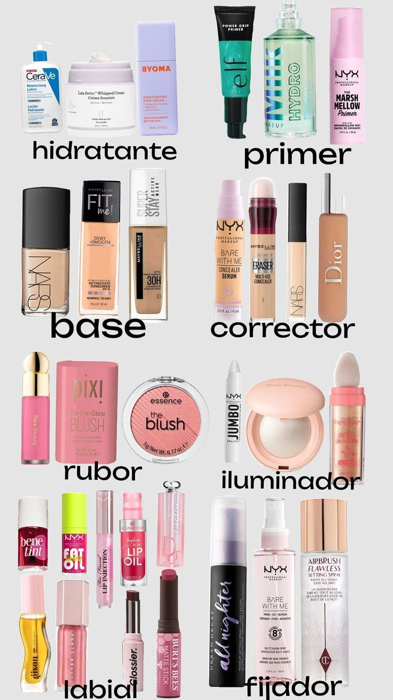

Actualmente el maquillaje es algo que se ha convertido en rutina, pues ya no solo es común verlo en mujeres, sino que también podemos verlo en hombres. Existen diversos tipos de maquillajes como el de uso diario, fiestas, efectos especiales, carnavales, disfraces e incluso los retoque que se ustilizan para los actores.En esta página hablaremos sobre cuales son los productos de maquillaje mas comúnes y algunas marcas recomendadas segun el producto que tenemos que usar. También se incluirán videos de como aplicar estos productos, como una rutina, en especial cuando queremos un maquillaje sencillo para el día a día.
